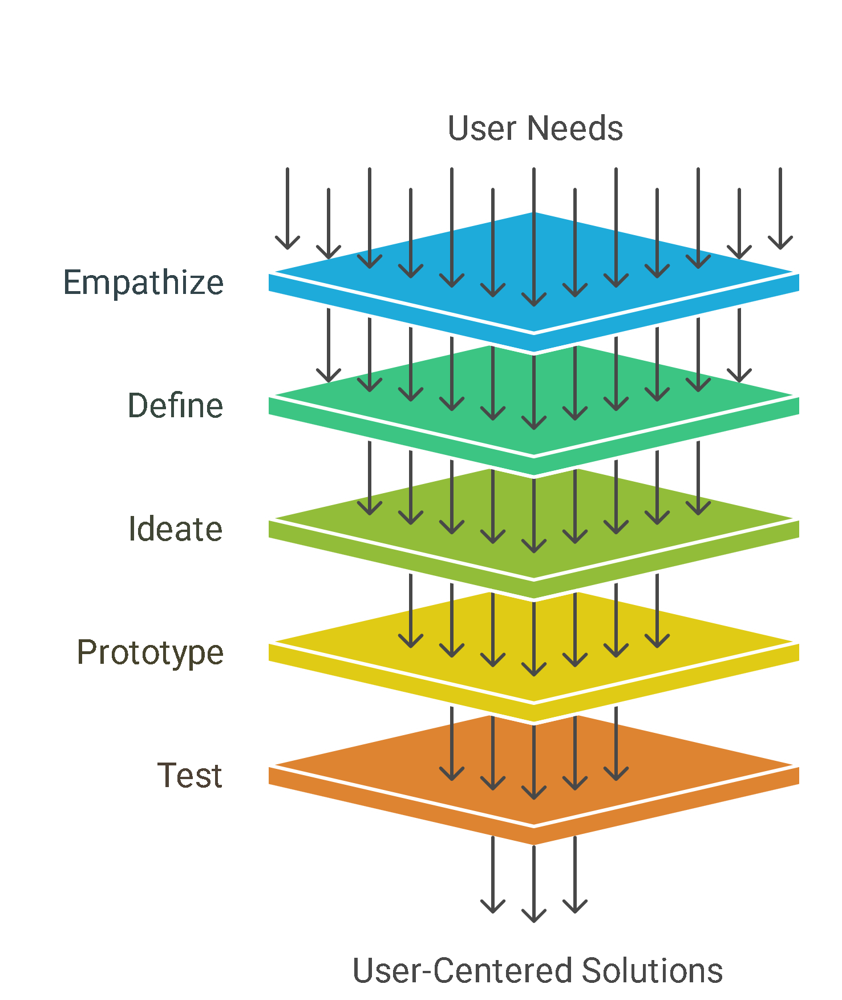
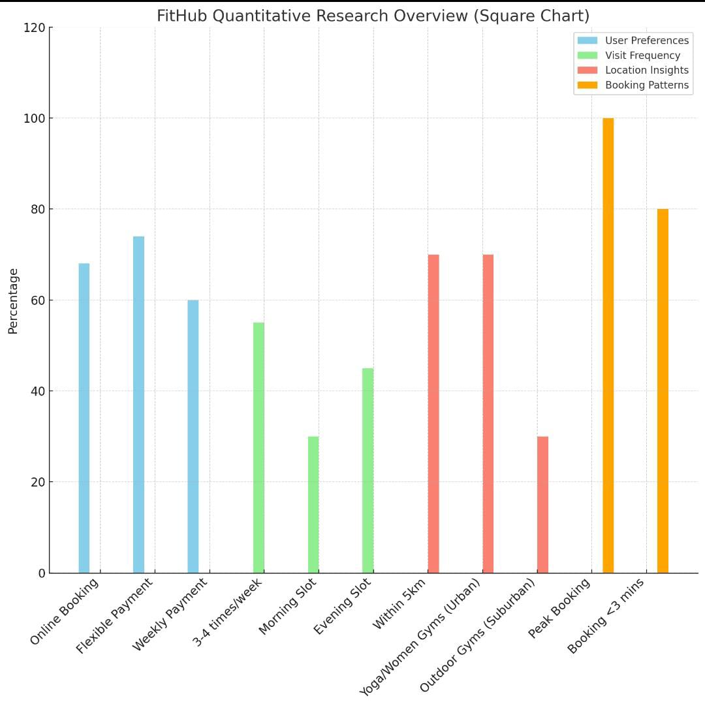
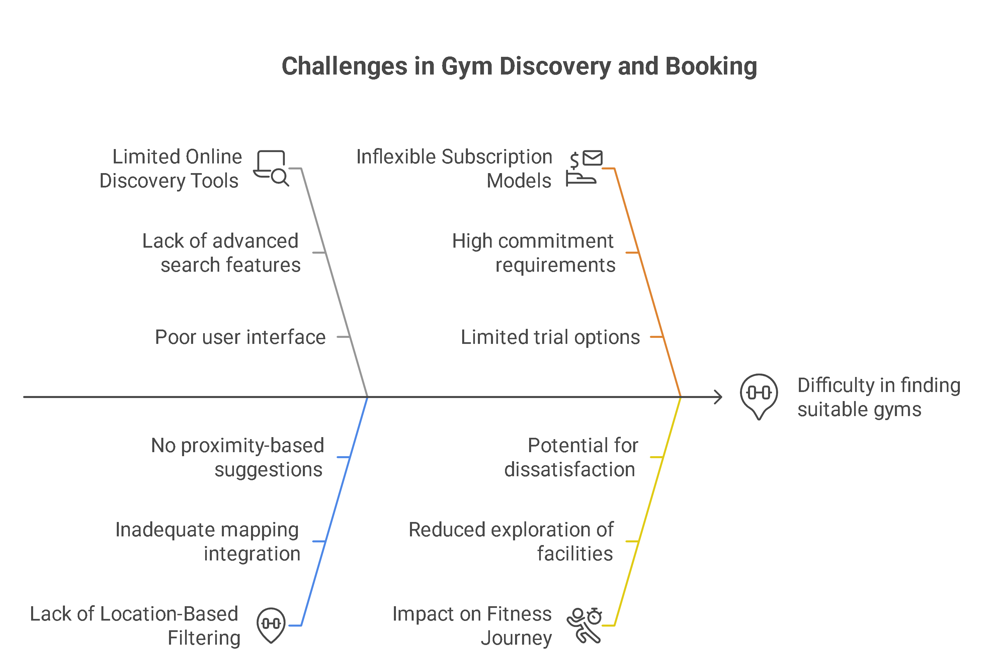
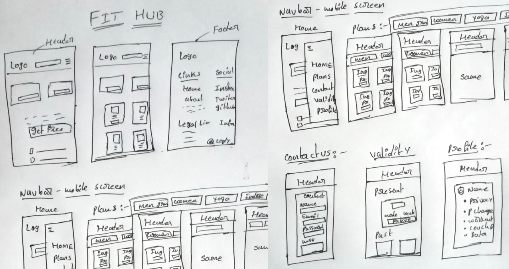
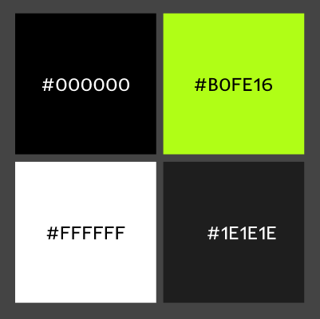
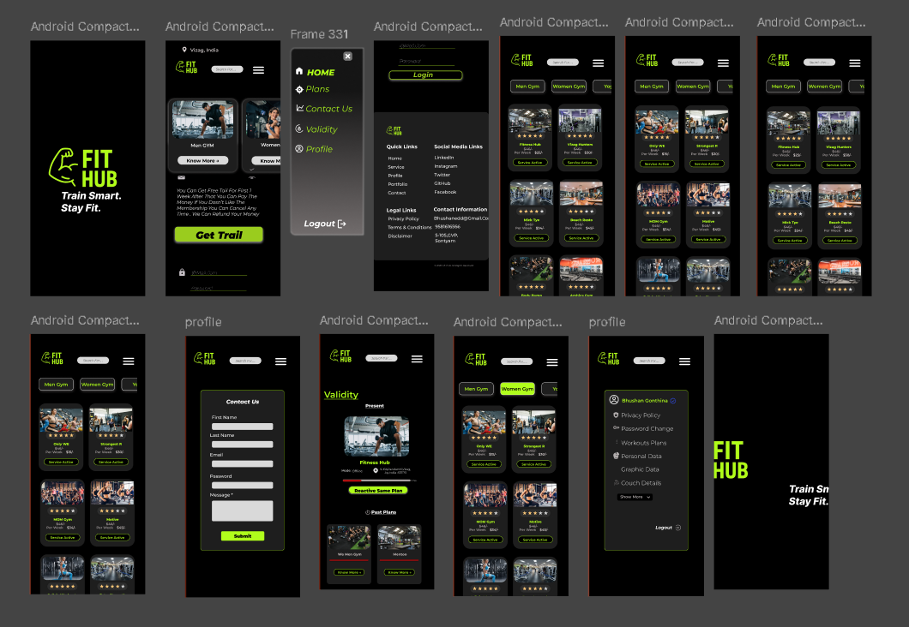
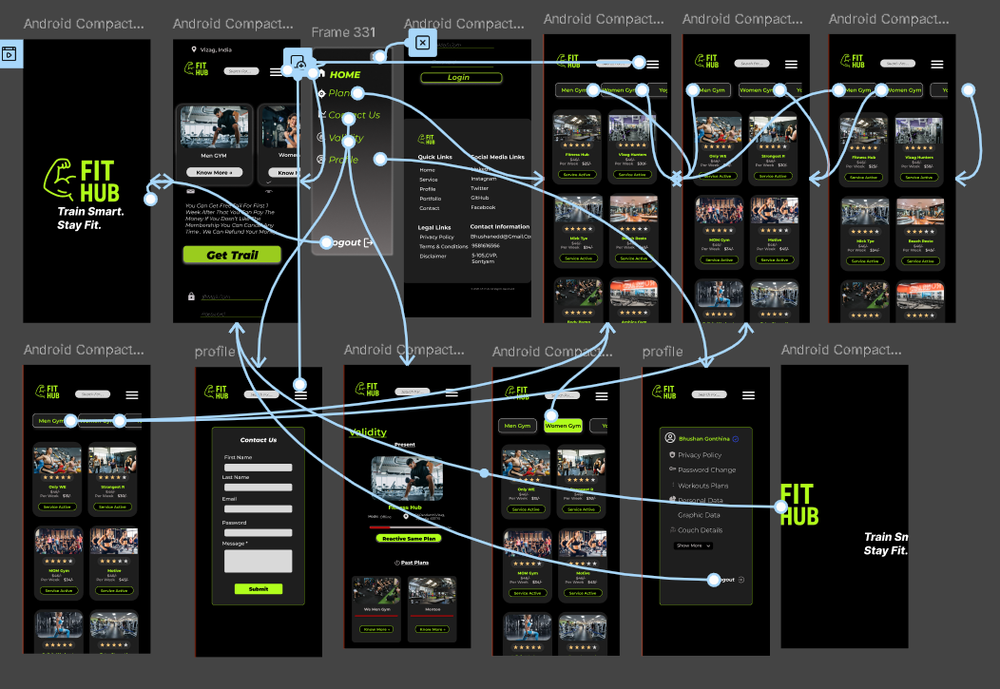

FitHub UX Case Study
Overview
Role
UI/UX designer
Time Frame
2 Weeks
Tools is use
Figma,VS code
Why I Chose This Project
In today’s fast-paced world, people are becoming more health-conscious, but many face challenges when it comes to accessing gym services — like long-term commitments, limited flexibility, and complicated booking systems. I identified a need for a solution that not only connects users to nearby gyms but also gives them full control over their fitness journey.
That’s why I created FitHub — a platform designed to offer:
- Flexible weekly payments instead of monthly fees, allowing users to try different gyms without being locked into long-term commitments.
- Easy slot booking with a smooth and user-friendly interface.
- Location-based search so users can find gyms near them instantly.
- A wide range of gym categories like men’s gym, women’s gym, yoga, indoor, and outdoor gyms.
- Coach and facility details available for both online and offline gym experiences.
This project solves a real-world problem and offers a unique approach to fitness booking, making gym access more flexible and user-friendly.
Project Challenges
Designing a smooth and simple experience for users was a major focus. I faced challenges in:
- Creating an easy slot booking flow without confusion.
- Organizing multiple gym categories clearly on all screen sizes.
- Making the UI beginner-friendly for users unfamiliar with tech.
- Ensuring mobile responsiveness and consistent design across pages.
- Handling location permission prompts in a user-friendly way. These challenges helped me build a clean, intuitive, and flexible fitness booking experience.
The Process- Design Thinking
Understanding user needs and emotions is the first step before initiating the design process, as illustrated in the image below.

Quantitative Research
- User Survey Results: :
- Surveyed 150 fitness enthusiasts across different age groups.
- 68% preferred booking gym slots online rather than in-person.
- 74% favored flexible payment options, with 60% specifically interested in weekly payments over monthly subscriptions.
- 55% of users visited the gym 3–4 times per week.
- 30% preferred morning slots (6 AM–9 AM), while 45% preferred evening slots (5 PM–8 PM).
- 70% of users searched gyms within a 5 km radius of their home or workplace.
- Yoga and women-only gyms were most searched in urban areas, while outdoor gyms had higher demand in suburban locations.
- Peak booking times were on weekends and weekday evenings.
- 80% of users completed slot booking within 3 minutes on the platform, indicating ease of use.
-
Gym Visit Frequency
:
-
Location Insights
:
-
Booking Patterns
:

Problem statements
Many fitness enthusiasts struggle to find nearby gyms that suit their needs due to limited online discovery tools and lack of location-based filtering. Traditional gym platforms often require monthly subscriptions, offering little flexibility for users who want to explore options before committing. Additionally, booking gym slots is either unavailable or overly complicated on most platforms. There's also a noticeable gap in providing clear coach details and service transparency. Lastly, many existing systems are not optimized for mobile devices or real-time location access, making the overall experience less user-friendly.

Initial Sketches and wireframe
The wireframes below represent the initial structural layout and user journey designed for the BUJJI voice bot website, focusing on clarity, accessibility, and seamless navigation.

color palette
Selected Color Palette Representing Bujji VOice bot Visual Identity
Visual Design
Final Visual Representation of Local Mart’s Interface

Prototype Preview
This is a Figma prototype preview. The design is for demonstration purposes and may be subject to changes.

FitHub flow
Key Takeaways / Learnings
Building FitHub taught me the importance of designing with the user’s real-world challenges in mind. I learned how to simplify complex booking flows, create flexible payment models, and prioritize responsive design for mobile users. Conducting user research and testing helped me improve usability and validate design decisions. This project strengthened my skills in UI/UX thinking, design iteration, and building accessible, user-first digital experiences.
Conclusion
FitHub was built to bridge the gap between fitness enthusiasts and accessible, flexible gym services. By focusing on user needs like weekly payments, location-based search, and simple slot booking, I created a platform that feels both modern and practical. This project not only enhanced my UI/UX and frontend skills but also taught me how thoughtful design can solve real-world problems. FitHub is a step toward making fitness more approachable and user-friendly.